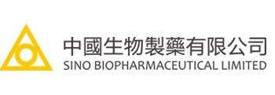
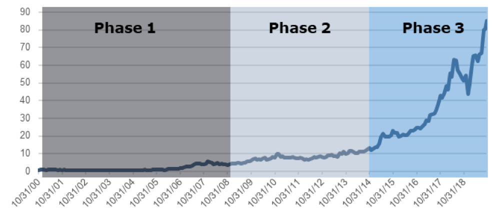

Industry Overview
Customer Segmentation | Overview of China Healthcare Industry | Overview of China Drug Industry

Sino biopharma is an industry leader for generic drugs and specialize in liver related diseases. Through its continuous reformation and innovation in medical, pharmaceutical, and health fields, it has grown in size with more than 20 shareholding companies.
 It has a professional promotion team consisting of more than 10,000 employees, and nearly 1,000 kinds of products, covering all types of medical institutions at all levels across the country. We have launched more than 30 products with annual sales revenue of over 100 million CNY. Especially in the field of liver diseases, a number of major products have annual sales revenue exceeding 1 billion CNY, accounting for 24% in the overall sales income of the liver disease market in China.
Sino Boppharama has a competitive drug portfolio and robust R&D pipeline, with R&D spending percentage topping peers, as seen from the graph above.
It has a professional promotion team consisting of more than 10,000 employees, and nearly 1,000 kinds of products, covering all types of medical institutions at all levels across the country. We have launched more than 30 products with annual sales revenue of over 100 million CNY. Especially in the field of liver diseases, a number of major products have annual sales revenue exceeding 1 billion CNY, accounting for 24% in the overall sales income of the liver disease market in China.
Sino Boppharama has a competitive drug portfolio and robust R&D pipeline, with R&D spending percentage topping peers, as seen from the graph above.
Find out more at Sino Biopharma’s website at: http://www.sinobiopharm.com/en/#/
Find out more about Sino Biopharma’s industry competitiveness within R&D, manufacturing, and distribution:
Sino Biopharma’s competitive edge is developed by three main pillars, including a diverse R&D portfolio, strength in product distribution and rollout, participating in national reimbursement schemes, and having first to market advantages. These competitive edges has enabled Sino Biopharma to have higher margins, fewer industry competition, and a longer market shelf life.

 2010: Admitted into HSI Consumer Goods and HSI Small Cap constituent stock
2010: Admitted into HSI Consumer Goods and HSI Small Cap constituent stock
2014: Acquired Karoliska Development and became largest stakeholder
2015: Acquired LifeBond, an Israel based medical device company, became 2nd largest shareholder
2017: Acquired 42% stake of Qingdao Chia Tai
2018: 1 Government Policy on GPO (Group purchasing regulation) impact on pharma industry 2 Acquired 24% of Beijing Tide 3 Admitted into HSI Constituent stock
Hengrui Medicine is a pharmaceutical company based in China focusing on research, development, manufacturing, and commercialization of innovative and high-quality healthcare products.



Phase 1: 1997-2008
Focused on fast follow, aiming to replace foreign products
Phase 2: 2008-2014
Commitment to innovative R&D (me better) and “go global”
Phase 3: 2014-2018
Market generic drugs to overseas market; focus on genuinely innovative drugs
Customer Segmentation | Overview of China Healthcare Industry | Overview of China Drug Industry

The Life of a Drug | Demystifying R&D + Drug Registration | Supply Chain and Major Players (Competitive Landscape)

Policy & Regulation Support | Distribution Channel

Company 1 - Sino | Company 2 - Henrui
Regulatory and Policy: Centralized Procurement | National Reimbursement Drug List (NRDL)

Industrial Jardon | Interesting Video

The Economist - China’s pharmaceuticals industry is growing up

The Economic Times - Chinese growth shot’s some years away for pharma companies

China Daliy - Pharma companies undergoing critical transformation
Pharmaceutical Technology - Characterising Eastern China’s pharmaceutical manufacturing market: Shandong and Jiangsu

Express Pharma - Is China the next land of opportunity?